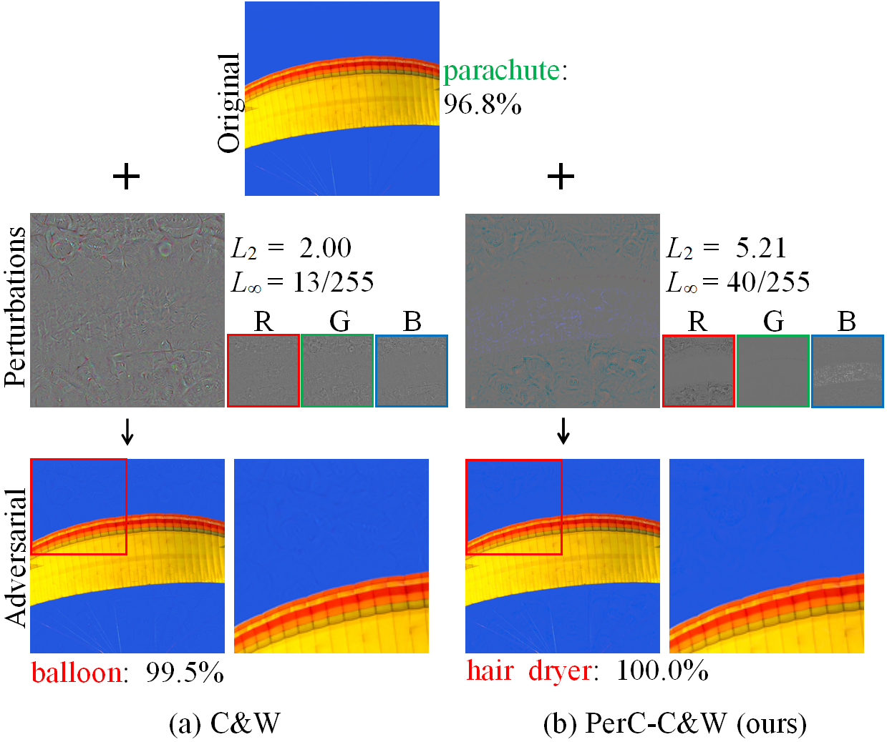

Saarbrücken, Germany
zhengyu.zhao@cispa.de
About Me
I am a postdoc at CISPA Helmholtz Center for Information Security in Germany, working with Prof. Michael Backes and Dr. Yang Zhang. I have finished my PhD research at Radboud University in the Netherlands, where I have been working with Prof. Martha Larson. My general research goal is to develop trustworthy computer vision systems. Much of my experience has concentrated on adversarial examples and data poisoning. Prior to my PhD, I also did some research on image forensics and scene recognition.
News
- [12/2021] I have started my new journey at CISPA!
- [10/2021] Check out a curated list of events (e.g. workshops and tutorials) on adversarial examples!
- [09/2021] I have finally submitted my PhD thesis!
- [05/2021] I am honored to participate in the Doctoral Consortium of CVPR 2021.
- [08/2020] I am an Outstanding Reviewer of BMVC 2020.
- [07/2020] We are organizing the 3rd edition of Pixel Privacy Task
at MediaEval Benchmark 2020.
Publications

|
Unlearnable Examples Zhuoran Liu, Zhengyu Zhao, Alex Kolmus, Tijn Berns, Twan van Laarhoven, Tom Heskes, Martha Larson arXiv, 2021 [Code] |

|
Zhengyu Zhao, Zhuoran Liu, Martha Larson Annual Conference on Neural Information Processing Systems (NeurIPS), 2021 (Previously presented at ICML 2021 Workshop on AdvML) [Code] |

|
within Parametric Filter Space Zhengyu Zhao, Zhuoran Liu, Martha Larson Submitted to IEEE Transactions on Pattern Analysis and Machine Intelligence (TPAMI), 2021 (Preliminary version published at BMVC 2020 [Video]) [Code] |

|
Zhuoran Liu, Niels Samwel, Léo Weissbart, Zhengyu Zhao, Dirk Lauret, Lejla Batina, Martha Larson Network and Distributed System Security Symposium (NDSS), 2021 [Code] [Video] |

|
Zhuoran Liu, Zhengyu Zhao, Martha Larson ACM Conference on User Modeling, Adaptation and Personalization (UMAP), 2021 [Code] |
|  |
with Perceptual Color Distance Zhengyu Zhao, Zhuoran Liu, Martha Larson IEEE Conference on Computer Vision and Pattern Recognition (CVPR), 2020 [Code] [Video] |

|
on Content-based Image Retrieval Zhuoran Liu, Zhengyu Zhao, Martha Larson ACM International Conference on Multimedia Retrieval (ICMR), 2019 [Code] |

|
for Scene Recognition Zhengyu Zhao, Martha Larson ACM International Conference on Multimedia (ACM MM), 2018 (Reproducibility companion paper published at ACM MM 2019) [Code] |
Academic Services
IEEE Transactions on Information Forensics and Security
Pattern Recognition
International Journal of Intelligent Systems
Multimedia Tools and Applications
CVPR 2022
AAAI 2022
BMVC 2020-2021